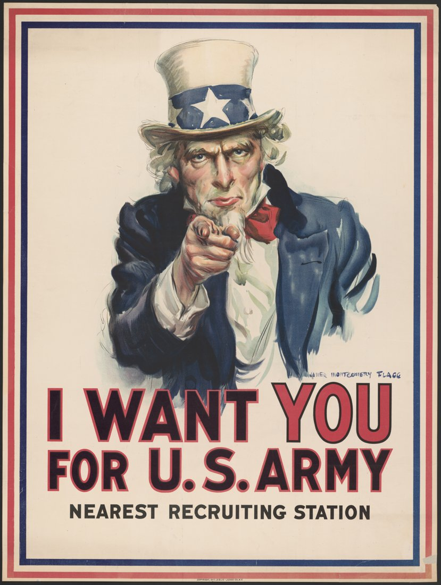

Directions: Study the poster and the background note, then answer the questions.

Background. When the United States entered the war in April 1917, its small peacetime army had to grow into a force of millions. Illustrator James Montgomery Flagg drew this Uncle Sam, using his own face as the model, for a magazine cover in 1916, and the Army adapted the image as a recruiting poster in 1917. The Committee on Public Information, created the same month the war was declared, ran the wider persuasion campaign of posters, pamphlets, films, and Four Minute Men speakers. Congress also passed the Espionage Act in 1917 and the Sedition Act in 1918, under which more than two thousand people were prosecuted, most of them for speech or writing.
Committee on Public Information: the federal agency that promoted support for the war through posters, pamphlets, films, and speakers
Sedition Act: the 1918 federal law that punished disloyal or abusive speech about the government, the Constitution, the flag, and the armed forces
1. The poster speaks to one viewer at a time. Name two specific choices Flagg made to do that, and state what the poster asks the viewer to do besides feel patriotic.
2. Persuasion and prosecution were the two halves of the wartime home front described in the background note. Which half does this poster belong to, and what did the other half do that a poster could not?
3. Charles Schenck was prosecuted for leaflets urging men to resist the draft, and the Supreme Court upheld his conviction in 1919. Set the poster and the leaflets side by side: both were printed appeals about military service. Why was one printed by the government and the other punished by it? Answer in two or three sentences.
1. Accurate choices include Uncle Sam pointing directly out of the poster at the viewer, the second person text I WANT YOU, the stern eye contact and close framing, and the plain background that removes every distraction. The poster asks the viewer to act: to go to the nearest recruiting station and enlist, as its own text states. Award credit for two choices correctly tied to the single viewer address, plus the action. Blueprint 10: the managed home front, official persuasion.
2. The poster belongs to persuasion, the work of the Committee on Public Information and the services' own publicity. The other half, prosecution under the Espionage and Sedition Acts, could compel: it could fine, imprison, and silence speech, as in the more than two thousand cases the note records. A poster can only ask. A statute can punish a refusal and punish the asking of the opposite. Blueprint 10 and 11: official persuasion; dissent prosecuted.
3. The difference was direction, not medium. The poster urged men toward enlistment, which served the recruiting the Espionage Act protected. Schenck's leaflets urged men to resist the draft, which the Court treated as obstruction creating a clear and present danger in wartime. Proficient answers name the test or its wartime logic: identical printed appeals were judged by what they asked for and by the circumstances of a nation at war. Blueprint 11: the Espionage Act and Schenck v. United States.
Teacher note. This check is formative. The common weak answer describes the poster on question 1 without naming the action it demands, and treats question 3 as a question about which appeal was true. Reteach point: the home front ran on both instruments at once, the poster on the wall and the statute behind it, and the lesson question cannot be answered from either one alone.